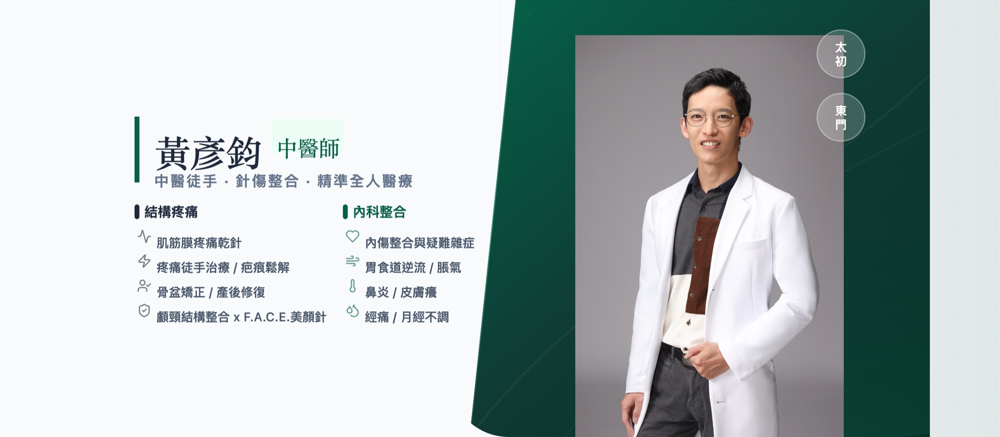

治病，也醫人
以徒手、針刺與方藥，實踐全人診療的臨床紀錄。
精選醫案
從歷年診間紀錄中選出的代表性案例，帶您認識我的診療思路。
-
尾椎痛，不一定調尾椎：一位產後媽媽的薦髂關節失能紀錄
產後一個月的媽媽尾椎痛到坐不住，觸診發現尾椎本身並無異狀——問題出在薦髂關節與腰薦結構的失能，徒手與針灸並用的診療紀錄。
-
臀腿痛數月不癒，關鍵在剖腹產疤痕：疤痕鬆解與核心恢復
臀腿痛數月、連坐著都困難，評估發現剖腹產疤痕抑制了核心肌群的發力；鬆解疤痕後，連脹氣困擾也一併改善的一次紀錄。
-
產後單側臉浮腫：從僵硬肩頸找回臉部循環
產後單側臉浮腫、右眼瞼略下垂，源頭在僵硬肩頸限制了顱頸連動與體液循環；徒手鬆解後臉部消腫的過程紀錄。
-
檢查都沒問題，為什麼還是頭痛暈眩？揭開藏在脖子前側的「偽裝大師」
檢查都正常，卻反覆頭痛、暈眩、耳鳴？認識脖子前側的胸鎖乳突肌（SCM）——轉移痛的「偽裝大師」，以及精準、安全處理它的方式。
-
手麻六年，未必是頸椎壓迫：肌筋膜失能的另一種可能
手麻六年、麻到影響睡眠，卻不是頸椎壓迫；從肩胛與下背肌群的失能找到源頭，標本並治的診療思路。
-
長年頭痛，原來可以看中醫傷科
每週發作的長年頭痛，內科調理始終無法斷根；從高位頸椎與相關肌群切入處理後，兩週未再發作的變化紀錄。
-
二十多年睡不好，原來與睡眠呼吸中止有關：一次跨科協作
睡不好二十多年、身心俱疲，問診與脈象指向睡眠呼吸中止；重新檢測並調整呼吸器參數後終於一夜好眠的跨科協作紀錄。
-
六、七年的耳鳴耳悶：從顱骨結構切入的治療紀錄
從懷孕開始、持續六七年的耳鳴耳悶，各處求醫未果；從顱骨排列與顳骨結構切入治療的過程與患者回饋。
想找特定症狀的相關文章？到文章頁依症狀搜尋 →
最新文章
-
當骨骼沒壞，問題出在哪？－從徒手解構張力，以超音波導引針刀精準拆彈
面對長期慢性、頑固性的疼痛，臨床診療往往就像在「剝洋蔥」。我們必須一層一層把代償的偽裝剝開，釐清錯綜複雜的力學代償，才能找到最核心的病灶。 最近一位歷經半年疼…
-
髖部卡卡、腹股溝痛不是小毛病！從姿勢代償看髖關節發炎與夾擠
最近的門診，連續遇到好幾位深受「髖關節夾擠」與發炎困擾的患者。 他們之中，有的是運動受傷，有的是產後突發的劇痛，也有痛了一週甚至拖了三個月才來就診的。但共通點…
-
表面解剖：所有精準徒手與針刺的必經之路 —— 第四屆工作坊完成
今天，第四梯次的「表面解剖觸診與徒手入門工作坊」順利落幕！ 不知不覺中，這個工作坊已經累計與 64 位中醫師同道們交流學習。看著課堂上，從剛步入校園的大一新生…
-
抽絲剝繭的解謎——從肌筋膜排查到「超音波導引針刀」的必要性
臨床上，經常會遇到一些「反覆發作、時好時壞」的頑固性痠痛。面對錯綜複雜的人體張力系統，最怕陷入「單一視角」的盲點，局部的痛點往往只是冰山一角。因此，完整的治療必…
-
診間裡的時光機：跨越十年的重逢，用專業回敬當年的祝福
今天的診間，來了一位我大學時代的老朋友，帶著剛生產完的太太一起來。 「大學」，是個聽起來已經有些遙遠的時代。當年，他是一起在「台大中友會」揮灑青春、揮霍時光的…